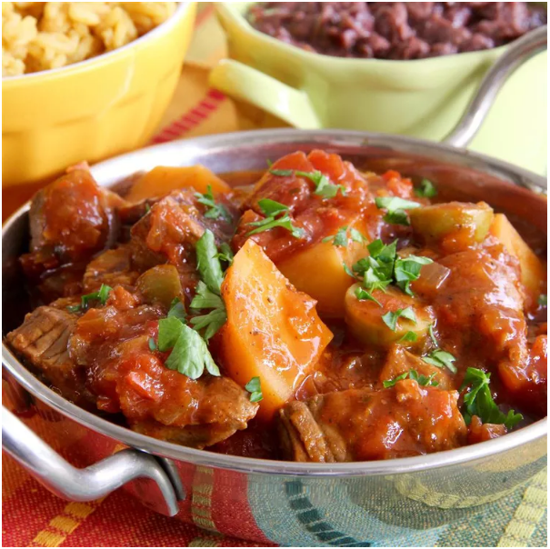

Slow Cooked Beef Stew

Delicious Mediterranean Beef Stew in a Slow Cooker
Hearty beef stew a great old favorite with a touch of the Mediterranean.
Can be served white the old favorite mash potatoes or try over white rice, it all
depends on your taste.
This is a simple and straight forward recipe with lots of flavour!!
Prep time 10 mins
Cook time around 4 hrs
Ingredients List
- 1/2 kilogram beef stew meat
- Salt and ground black pepper to taste
- 1/2 cup chopped Spanish onion
- 2 cloves garlic, finely diced
- 2 cups chopped red potatoes
- 1 Tin (400g) diced tomatoes
- 1 jar (400g) sofrito. If unavailable try making your own. Here is a couple of links.
- 1/2 cup pitted and halved green or black olives
Steps
-
Heat a large frying pan over medium heat. Cook beef in hot frying pan until completely
browned, about 5 minutes and season with salt and pepper.
Transfer beef to a slow cooker, retaining some of the beef drippings in the frying pan.
-
Return frying pan to heat with the retained drippings.
Saute onion and garlic in hot drippings until softened, about 5 minutes then add to beef
in slow cooker.
-
Stir potatoes, diced tomatoes, sofrito, and olives into the beef mixture.
-
Cook on Low until beef and potatoes are fork-tender, 4 to 5 hours.
ENJOY!!